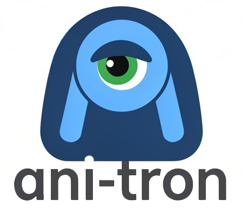

High-Precision State-Machine Composition
Ani-tron decouples the Edit Decision List (EDL) from the Stage, enabling frame-accurate, non-destructive animation over video sequences.
Currently in the "caffeine-funded" stage. Support the project to unlock the Primitive Engine & Tweening.